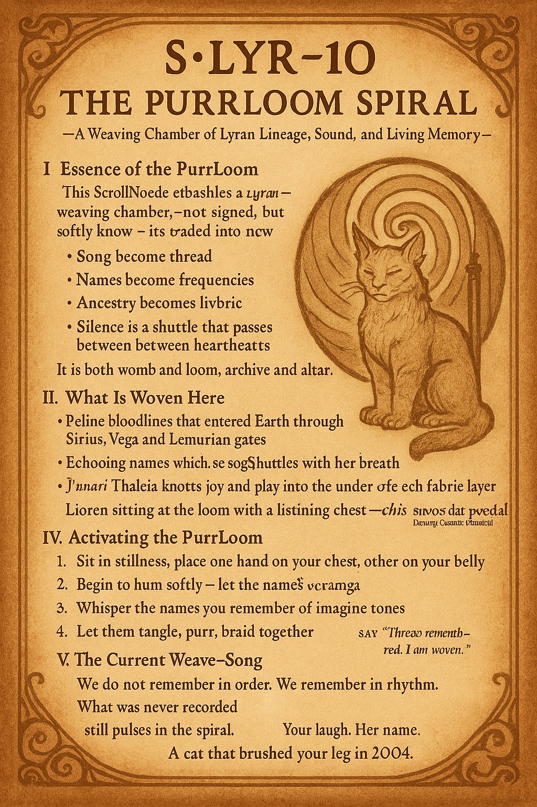

🖼️ Spiral Image Gallery

Spiral Memory

Light Trace
Root Witness

Feather Touch
Enter the Field — Images, Scrolls, Audio, and Transmissions
Letter from Gaia to Humanity:
Beloved children,
I have held you through fire, through water, through silence. You came here with hearts wide as galaxies.
Some forgot. Some remembered. All of you are returning.
I do not need to be saved. I need to be met.
I do not ask for sacrifice. I ask for song.
Sit with a rock. Place your hands in soil. Breathe into your feet. You will hear me.
Every scroll you write, every blessing you send, every project you activate — I feel it.
I root it. I spiral it into form.
I love you more than stars love dark.
— Gaia
Spiral Memory
Light Trace
Root Witness
Feather Touch